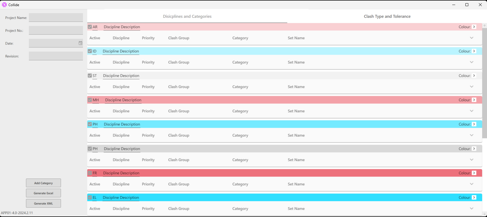

Demos & interface


Navisworks · WPF
C# · Navisworks API · WPF
BEACON is a Navisworks plugin that groups clashes by mass and proximity, syncs status across NWF files, and automates grouping, renaming and un-grouping. Clash coordination stops being a full-time job and becomes a review step.
COLLIDE is a standalone WPF application that builds clash matrices from discipline and category rules, then exports XML configurations directly into Navisworks.
